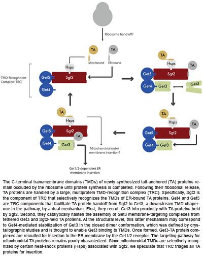

News Archives : 2010 : The Moving Parts of a Tail-Anchored Protein Sorting Machine
by Vlad Denic
September 20, 2010
Membrane protein targeting is a fundamental problem in cell biology. Pioneering work by George Palade in the 1960s established that the endoplasmic reticulum (ER) is the entry point for most proteins along the secretory/endocytic pathway. ER protein targeting information was later shown by Gunter Blobel and colleagues to reside in N-terminal signal sequences and start-transfer signals. Much research since then has revealed that the signal recognition particle (SRP) binds to these hydrophobic sequences upon their emergence from the ribosome and escorts them to the SRP receptor in the ER membrane for co-translational protein translocation by the Sec61 translocon.
Hundreds of membrane proteins contain targeting information in their C-terminal transmembrane domain (TMD) and don’t fit this paradigm because their TMD becomes physically accessible for chaperone recognition only upon translational termination and release from the ribosome. Studies in the 1990s demonstrated that tail-anchored (TA) proteins can be post-translationally targeted for insertion into the ER membrane even in the absence of SRP and Sec61 by an operationally-distinct, energy-dependent targeting mechanism. In addition, some TA proteins, such as most SNARE proteins, which mediate vesicular fusion, are targeted to the ER, while others, such as Bcl2 proteins, which mediate apoptosis, are targeted to the outer mitochondrial membrane.
The last four years have been an exciting time in this field because of the genetic and biochemical identification of several components of the Guided Entry of TA proteins (GET) pathway. These studies have shown that Get3 is a cytosolic TMD chaperone that forms membrane targeting complexes with ER-directed TA proteins and recruits them to the Get1/2 ER transmembrane receptor for insertion. This conceptual framework explained the strong membrane targeting specificity of ER-directed TA proteins but raised the issue of how Get3-TA protein targeting complexes are formed in the first place. In other words, does Get3 sample all newly-synthesized TA proteins and selectively commits ER-directed ones into targeting complexes or are TA proteins already sorted at an earlier step in the GET pathway before Get3 recognition takes place?
In this paper we are describing the biochemical reconstitution of TA protein delivery to Get3 that enabled us to answer this question. Here we have shown that three conserved cytosolic proteins, Get4, Get5, and Sgt2 form a TMD-recognition complex (TRC), which stands in the GET pathway between the ribosome and Get3. The role of Sgt2 in this complex is to recognize the targeting information of ER-directed TMDs. Intriguingly, Sgt2 TMD recognition depends on the methionine-rich domain of Sgt2 and is analogous to signal sequence binding to the methionine bristles of SRP. This suggests that methionine-rich domains are a general evolutionary strategy for building structurally plastic protein surfaces capable of recognizing diverse hydrophobic targeting signals. Following TA protein binding to TRC, Get4/5 play the role of an active tethering device that both recruits Get3 and actively promotes Get3-TA protein complex formation. Lastly, we engineered point mutations in a mitochondrial TMD that resulted in its recognition by Sgt2 and found that this was sufficient to cause mistargeting to the ER.
In summary, TA protein recognition by TRC is key decision point at the top of TMD chaperone cascade that culminates with the formation of Get3-TA protein membrane targeting complexes. This baroque targeting mechanism leaves us wondering why Get3 doesn’t recognize TMDs directly? One possibility is that TRC can be recruited to ribosomes synthesizing TA proteins, thus channeling ER-directed TA proteins to Get3 and away from potential interactions with non-cognate targeting factors (e.g., those involved in mitochondrial TA protein targeting). Another, not mutually exclusive possibility is that multiple TMD recognition steps enhance the fidelity (e.g., by kinetic proofreading) with which the GET pathway distinguishes the subtle targeting differences between ER-bound and mitochondrial TMDs. Lastly, we would like to understand what cellular factors are responsible for mistargeting ER-directed TA proteins to mitochondria when TRC is unable to get to them in time. Given the recent snowballing in our understanding of TA protein targeting in the cell, these questions are unlikely to remain unanswered for very long.
Read morein Molecular Cell (Advance Online Publication)
